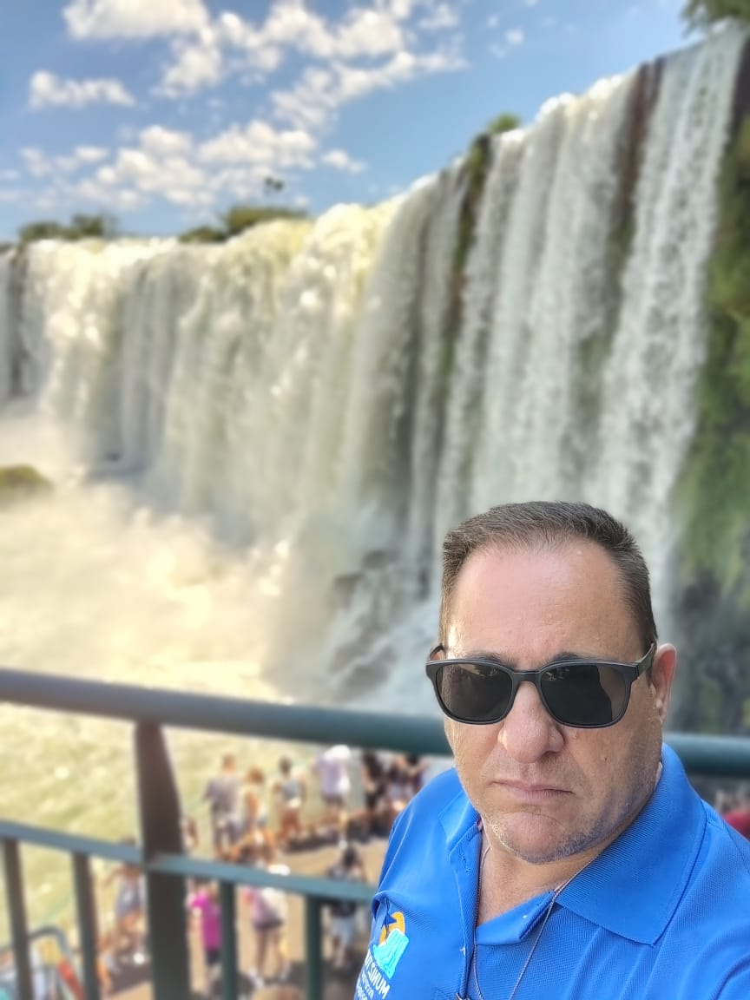
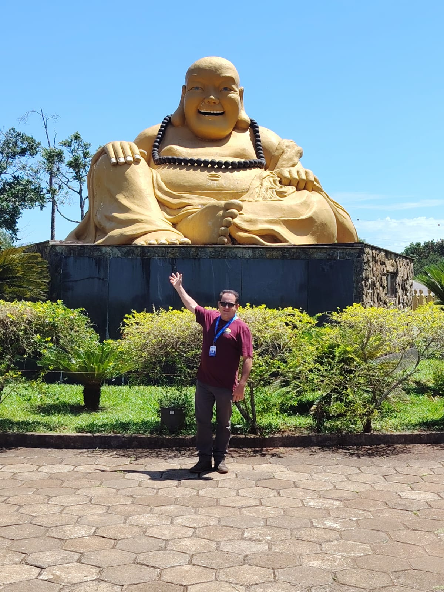
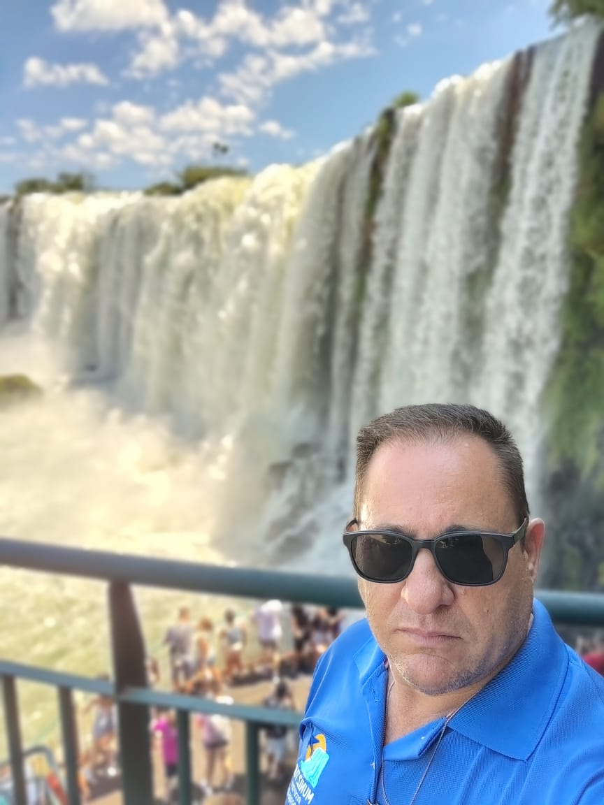
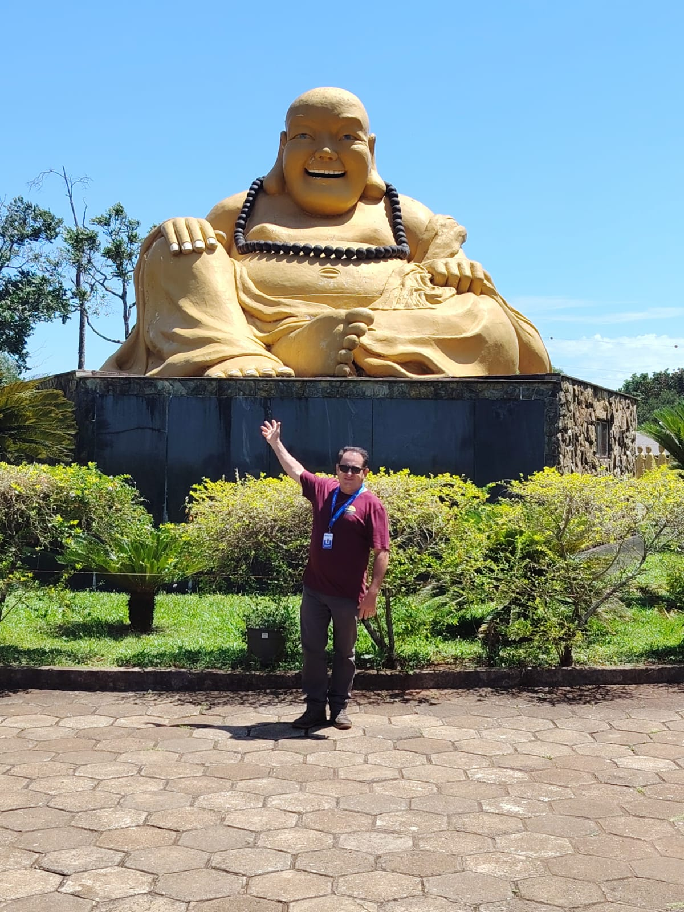

Quem Somos
A Muniz Tur Receptivo é uma agência de turismo familiar e local, situada em Foz do Iguaçu, especializada em oferecer passeios de qualidade com preços justos. Conhecemos a região como ninguém e trabalhamos para que cada visitante aproveite o melhor da cidade sem gastar mais do que precisa. Nosso diferencial está no atendimento próximo, transparente e personalizado, sempre buscando as melhores opções de roteiros, horários e valores. Atuamos com os principais atrativos de Foz do Iguaçu, garantindo conforto, segurança e excelente custo-benefício em cada passeio. Aqui, você viaja com quem é da cidade, confia no que faz e se preocupa de verdade com a sua experiência.
 


